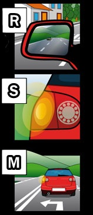
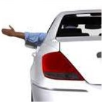
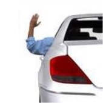
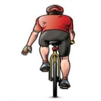
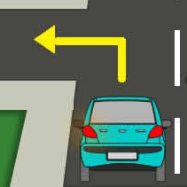
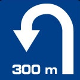
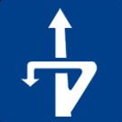
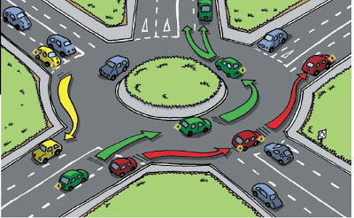

A manoeuvre is a notable variation in the moving vehicle such as:

Safety Rule (M.S.M.):
M (Mirror, look),
S (Signal: with light signals or arm),
M (Manoeuvre)
Acoustic signals (horn):
Use outside of a built-up area:
Use in and out of a built-up area:
Arm signals:
Signs made with the arm will take precedence over light signals. However, our first choice to show our intention to make a manoeuvre is using light signals.
| Turning left | Turning right | Slowing down |
 |
 |
 |
Merging with traffic:
When merging with traffic, you must drive at a speed that allows you to stop if you have to give way.
Other vehicles do not give way to the merging vehicle, but they should facilitate their merging.
1. As a general rule: Overtaking is done on the left.
2. You can overtake on the right when:
3. Lateral Space:
When overtaking IN A BUILT-UP AREA, you must leave a lateral space between you and the other vehicle, proportional to the speed and the width of the road.
When overtaking OUTSIDE of a built-up area, leave:
4. Obligations of a vehicle being overtaken:
Note: Vehicles more than 3500kg may not deviate onto the hard shoulder or use the right turn indicator to facilitate overtaking.
5. Ways to warn that you are going to overtake:
a) To the vehicle behind you with the turn signal or arm.
b) To the vehicle ahead (in front of you):
6. It is forbidden to overtake in:
a) Places of reduced visibility, except when lanes are marked with lines and overtaking is done without entering lanes of the opposite direction.
b) At level crossings and their vicinity, unless overtaking 2-wheeled vehicles.
c) In tunnels and underpasses if there is only one lane for the direction of the vehicle which is to be overtaken.
d) In pedestrian crossings and their vicinity, except:
e) At intersections, except:
7. When overtaking:
8. It is not considered overtaking when one vehicle goes faster than another in these cases:
There are 3 types of safe distances:
If the speed is doubled, the safety distance increases four times.
| Turning left  |
1. On roads with one lane for each direction, stay on the axis of the road without entering the opposite direction lane. 2. On 3-lane two-way roads, go to the middle lane. 3. On one-way streets, keep to the left side of the road. 4. At roundabouts, always go around them. 5. Bicycles and mopeds on inter-urban routes will turn from the hard shoulder if there is no designated place for the turn. 6. Turning left is prohibited in places where there is no visibility or where there is a no left turn sign. |
|
Change of direction: - At the same level  - At a different level  |
1. On conventional roads, this can be done both at the same and at a different level. 2. On motorways and dual carriageways, it is done at a different level, through the exits. 3. It should be performed in a manoeuvre without reversing. 4. Places where it is prohibited:
|
Reverse: forbidden on motorways and dual carriageways. On other roads it can be done but only in two ways:
Vehicles driving around a roundabout have priority over those which are trying to join them.

STOP: Voluntary immobilization that lasts less than 2 minutes and the driver does not abandon the vehicle (but may get out).
PARKING: Voluntary immobilization lasting 2 minutes or more, or lasting less than 2 min and the driver ABANDONS the vehicle.
DETENTION: Involuntary immobilization (breakdown, buckling, jam, feeling unwell, etc.)
Motorways and dual carriageways: forbidden to stop and park except in designated places.
Conventional roads: you can stop and park off the roadway and onto the hard shoulder if it is passable. Always on the right side.
Urban roads and cross-town routes: you can stop and park if there is no rule that prohibits it:
1. Stop the engine and make sure the vehicle cannot be used without authorization.
2. Engage the handbrake (UK) / parking brake (USA).
3. On uphill gradients, put the vehicle in first gear and into reverse on downhill gradients.
4. If towing a trailer, place chocks or lean the wheels on the kerb (UK) / curb (USA).
1. Connected V-16 emergency beacon: On two-way roads, place one in front and one behind. On one-way roads, place one behind. They are placed at least 50 metres from the vehicle and so that they are visible from at least 100 metres by other road users.
2. Turn on the hazard warning lights during the day and night.
3. Use emergency posts or call 112.
4. The vehicle should always be towed away on motorways and dual carriageways.